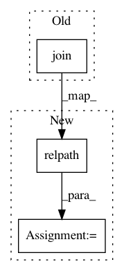

5463dd4c2245a151e69c14d06179c536e9ac0a84,wandb/sdk_py27/wandb_artifacts.py,LocalFileHandler,store_path,#LocalFileHandler#Any#Any#Any#Any#Any#,715
Before Change
)
entry = ArtifactManifestEntry(
os.path.basename(sub_path),
os.path.join(path, sub_path),
size=os.path.getsize(sub_path),
digest=md5_file_b64(sub_path),
)
After Change
% max_objects
)
physical_path = os.path.join(root, sub_path)
logical_path = os.path.relpath(physical_path, start=local_path)
entry = ArtifactManifestEntry(
logical_path,
os.path.join(path, logical_path),
size=os.path.getsize(physical_path),
In pattern: SUPERPATTERN
Frequency: 4
Non-data size: 3
Instances
Project Name: wandb/client
Commit Name: 5463dd4c2245a151e69c14d06179c536e9ac0a84
Time: 2020-12-23
Author: annirudh@wandb.com
File Name: wandb/sdk_py27/wandb_artifacts.py
Class Name: LocalFileHandler
Method Name: store_path
Project Name: wandb/client
Commit Name: 5463dd4c2245a151e69c14d06179c536e9ac0a84
Time: 2020-12-23
Author: annirudh@wandb.com
File Name: wandb/sdk/wandb_artifacts.py
Class Name: LocalFileHandler
Method Name: store_path
Project Name: ClementPinard/FlowNetPytorch
Commit Name: 8753096898d9b23e0ce05a1808e4b93f7475b051
Time: 2018-03-30
Author: clement.pinard@parrot.com
File Name: datasets/mpisintel.py
Class Name:
Method Name: make_dataset
Project Name: pantsbuild/pants
Commit Name: bfc3f494a7d139f8f629a45ad0e2faa12dcab5d7
Time: 2014-06-20
Author: stuhood@twitter.com
File Name: src/python/pants/backend/codegen/tasks/antlr_gen.py
Class Name: AntlrGen
Method Name: _create_java_target